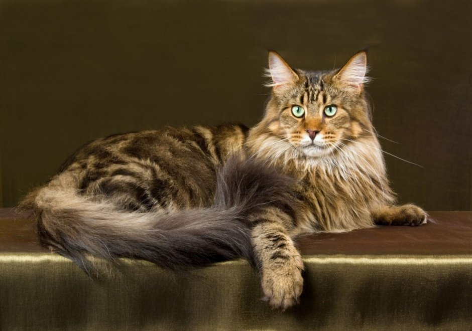
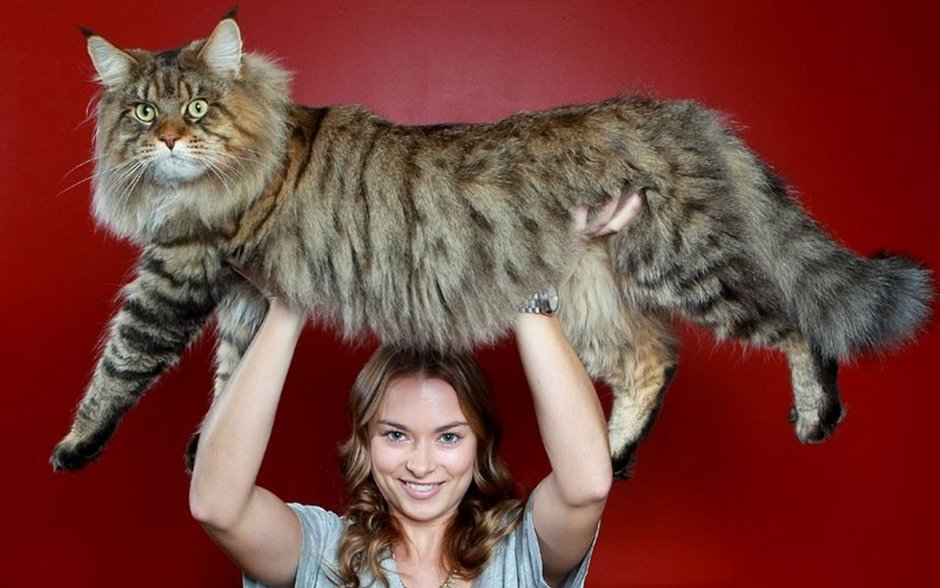
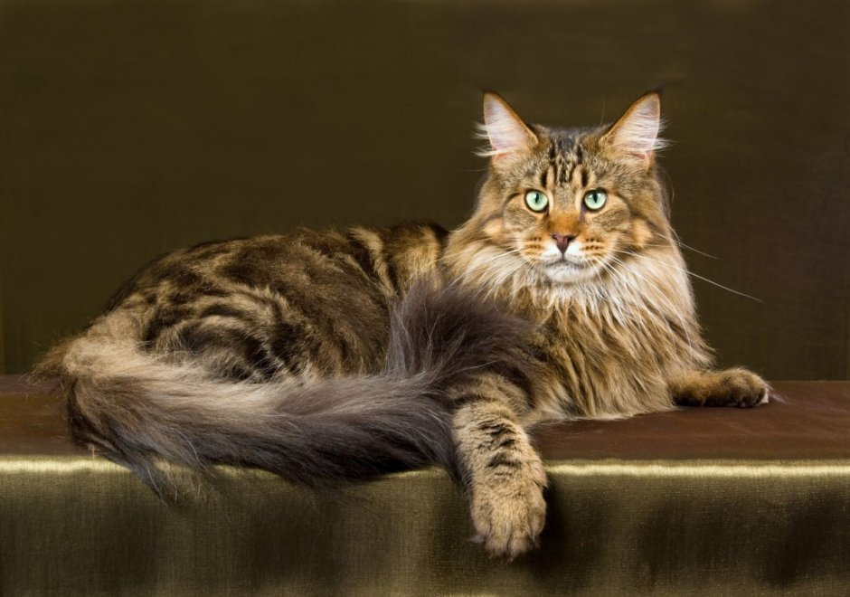
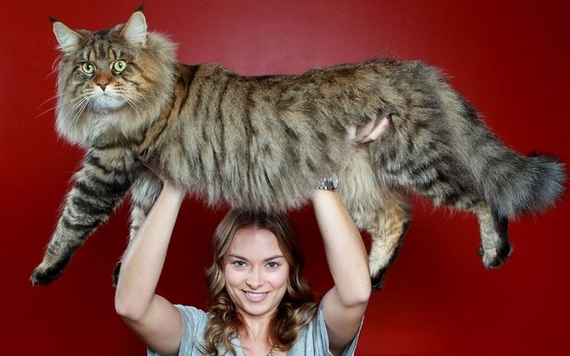

Мейн-кун заслужено вважається однією з найбільших порід домашніх котів. Самці вражають своїми розмірами, досягаючи ваги 6–10 кг (іноді більше), тоді як самки трохи дрібніші — 4–7 кг. Важливо, що вони повільно ростуть і досягають повного розвитку лише до 3-5 років. Їхня статура — це втілення сили: довге, мускулисте тіло прямокутного формату з широкою грудною кліткою. Голова має квадратну мордочку та сильне підборіддя. Візитівкою породи є великі, широко посаджені вуха, часто прикрашені характерними китицями на кінчиках, що надає їм вигляду маленької рисі. Довга, густа, водонепроникна шерсть, яка коротша на плечах і утворює розкішний «комір» на шиї та густі «штани» на лапах, ідеально захищає від холоду. Особливою гордістю є довгий, пухнастий хвіст, а великі лапи з пасмами шерсті між пальцями функціонують як природні снігоступи. Порода кішок мейн-кун може мати понад 30 варіантів забарвлення. Очі бувають зелені, золотаві чи мідні — а в білих котів зустрічаються голубі чи різнокольорові очі.
Походження
Предками кішок породи мейн-кун були довгошерсті коти, яких у 1850-х роках до американського штату Мен завезли моряки. Вони спарувалися з місцевими короткошерстими котами. Їхні потомки були великими, мали міцне тіло, шерсть середньої довжини та хвости-щітки, схожі на хвіст єнота, від чого і пішла назва: мейн-кун («єнот зі штату Мен»). Для захисту від суворої місцевої зими в цих котів відросло густе й щільне хутро. Вже в 1860-х роках проводилися спеціальні виставки кішок породи мейн-кун, і вони стали дуже популярними як домашні тварини. До Великої Британії мейн-кунів завезли в 1980-х роках.
Характер та Поведінка
Темперамент: Мейн-куни мають привітний, грайливий та доброзичливий характер. Вони дуже розумні.
Соціальність: Вони люблять бути в компанії людей і чудово ладнають з дітьми, іншими котами та навіть собаками. Вони не надто нав'язливі, але воліють ходити за господарем крок за кроком.
Грайливість: Зберігають грайливість протягом усього життя. Люблять активні ігри.
Навчання: Дуже розумні, легко піддаються дресируванню і можуть освоїти прості команди (наприклад, приносити іграшки, як собаки).
"Балакучі коти": Відомі своєю "балакучістю" — спілкуються різноманітними звуками, які часто описують як "щебетання" або "курликання", а не звичайне "нявкання".
Догляд
Догляд за Мейн-куном, попри довгу шерсть, є досить простим, але вимагає регулярності та уваги до деталей, пов'язаних з їхнім розміром.
Грумінг шерсті: Густа та довга шерсть потребує регулярного розчісування – щонайменше 2-3 рази на тиждень, а в період линьки — щодня. Це необхідно для запобігання утворенню ковтунів, особливо в пахвах, на "комірі" та "штанях". Завдяки водовідштовхувальним властивостям, купати Мейн-куна потрібно лише в міру необхідності.
Гігієна: Важливо регулярно перевіряти їхні великі вуха на наявність забруднень, особливо зважаючи на китиці. Також слід стригти кігті та забезпечувати доступ до міцних, стійких кігтеточок.
Фізична активність: Через великий розмір і м'язисту статуру, Мейн-куни потребують достатньо простору для активних ігор. Їм необхідні міцні та високі котячі дерева або комплекси, щоб вони могли реалізувати свій інстинкт лазіння. Вони зберігають грайливість протягом усього життя, тому щоденні ігри є обов'язковими.
Харчування
Харчування Мейн-куна має бути пристосоване до його статусу великого, активного хижака, який досягає повного росту пізніше, ніж інші породи.
Високий вміст білка: Як і всі коти, Мейн-куни потребують якісної, високобілкової дієти. Вибираючи корм, перевагу слід віддавати продуктам преміум-класу, розробленим спеціально для великих порід, оскільки вони враховують потреби у великих суглобах і м'язовій масі.
Контроль ваги: Вони схильні до переїдання, тому важливо строго контролювати порції та дотримуватися режиму годування (зазвичай 2-3 рази на день для дорослих особин). Зайва вага може створювати додаткове навантаження на їхні великі суглоби, що є важливим аспектом профілактики.
Вода: Через довгу шерсть і схильність до утворення грудочок шерсті в шлунку, достатнє споживання води є критичним. Багато Мейн-кунів люблять пити з проточних джерел, тому фонтанчики для пиття часто є кращим рішенням, ніж миска.
Добавки для суглобів: У деяких випадках, за рекомендацією ветеринара, можуть знадобитися добавки з глюкозаміном та хондроїтином для підтримки здоров'я суглобів та профілактики можливих спадкових захворювань, таких як дисплазія кульшового суглоба.
Цікаві факти
Представники цієї породи часто стають світовими рекордсменами у Книзі рекордів Гіннеса як найдовші домашні коти у світі. Зафіксовані особини сягали понад 120 см від носа до кінчика хвоста.
На відміну від більшості котів, Мейн-куни люблять воду. Це, ймовірно, пов'язано з їхнім походженням і водовідштовхувальними властивостями шерсті. Вони можуть гратися з водою у мисці або навіть плавати.
Вони належать до порід, які найдовше дорослішають. Тоді як більшість домашніх котів досягає свого повного розміру до 1-2 років, Мейн-куни продовжують рости і формуватися до 3-5 років.
Мейн-кунів часто називають "котами-собаками" через їхню поведінку. Вони можуть зустрічати господаря біля дверей, ходити за ним по п’ятах і навіть опановувати команду "апорт" (приносити кинуті предмети).
 


